First release
Reef octopus · gameplay camera
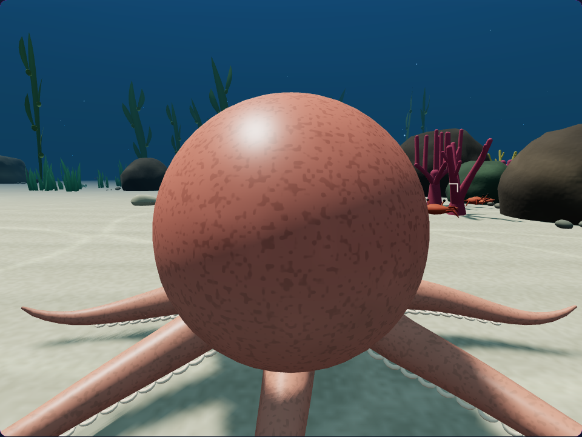
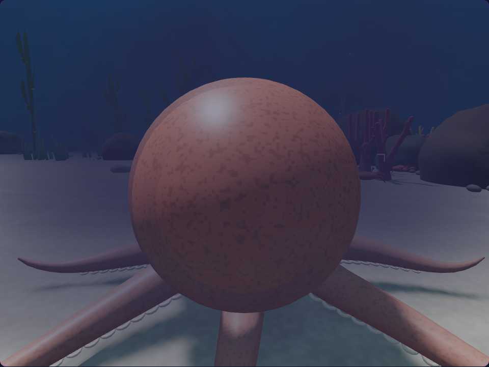
Layered billows drift, expand and dissolve into the water. A gentle fade at the seabed keeps the release grounded in the reef.
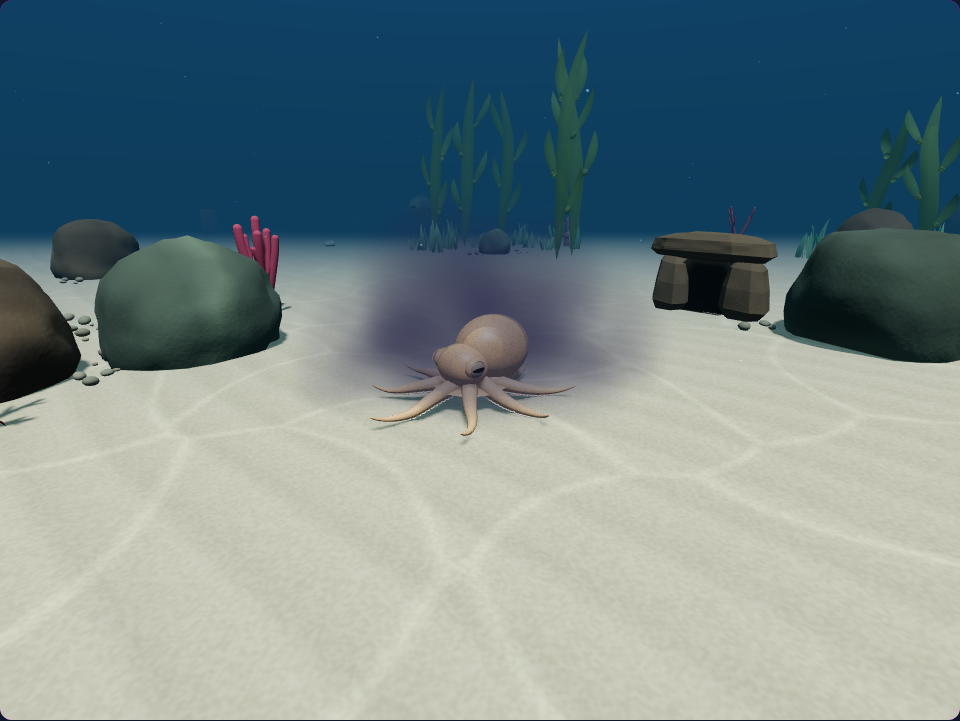
Eight native frames, captured 0.4 seconds apart. Each comparison uses the same world, camera and simulation time.
Reef octopus · gameplay camera


Side view · 0.8 seconds
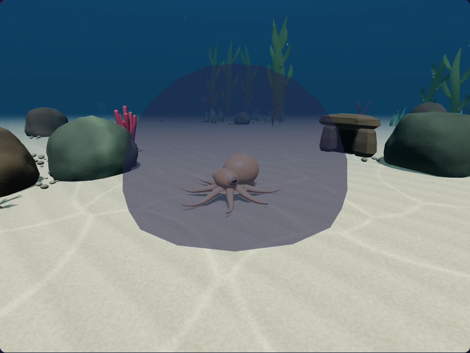
Phone · gameplay camera
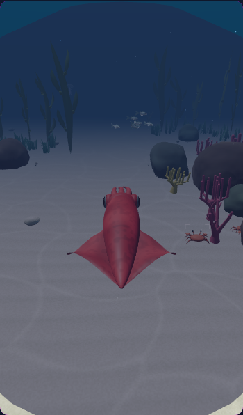
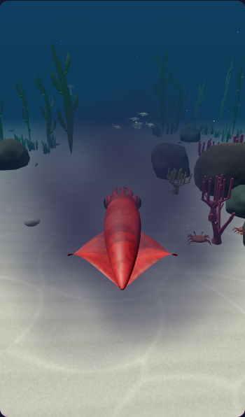
Phone · diagnostic camera
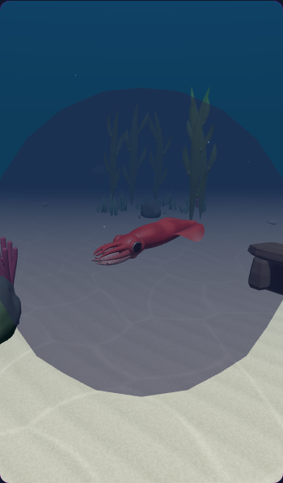
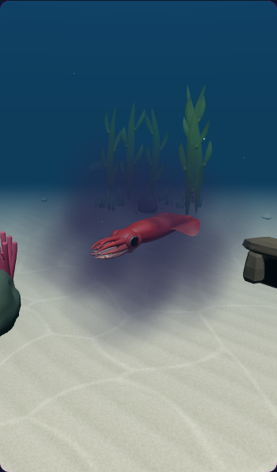
Reef octopus · diagnostic camera
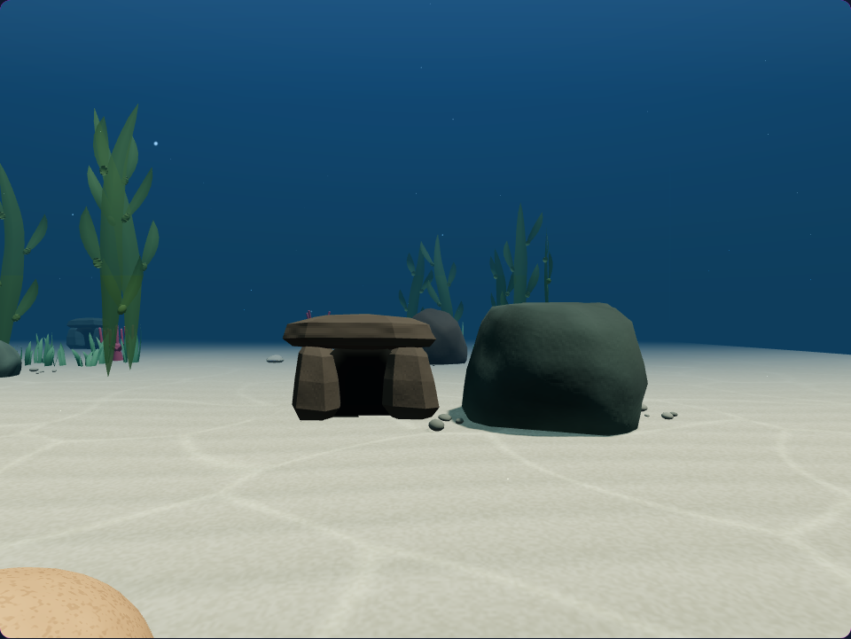
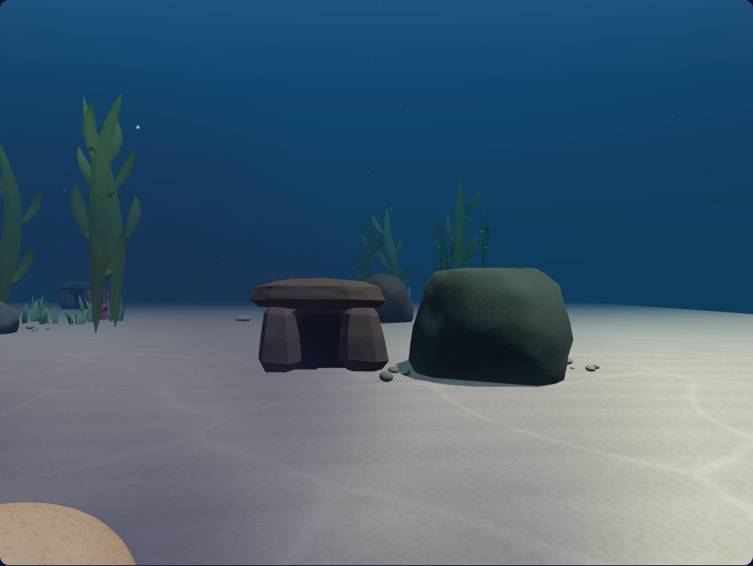
Phone · diagnostic camera
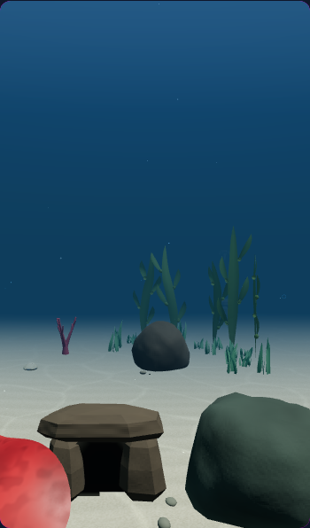
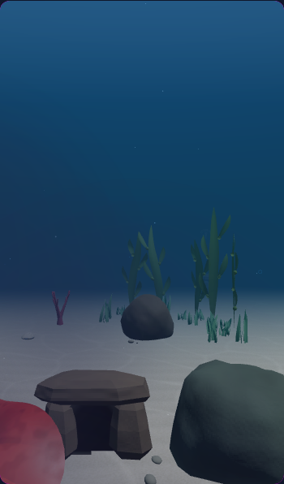
201 targeted tests and 10 native browser checks passed. Desktop and phone checks include pause, reduced motion, predator cover, target presentation and cleanup. GPU probes confirm the seabed fade on the reef, slope and deep floor.
These views use actual ink released with the I key. Actors and scenery keep their original positions. The octopus release and squid dive use the gameplay camera. The settled cover, side and inside views use diagnostic cameras. The effect approximates volume with billows and an analytic seabed fade. No hardware frame-rate or audio-quality claim is made.